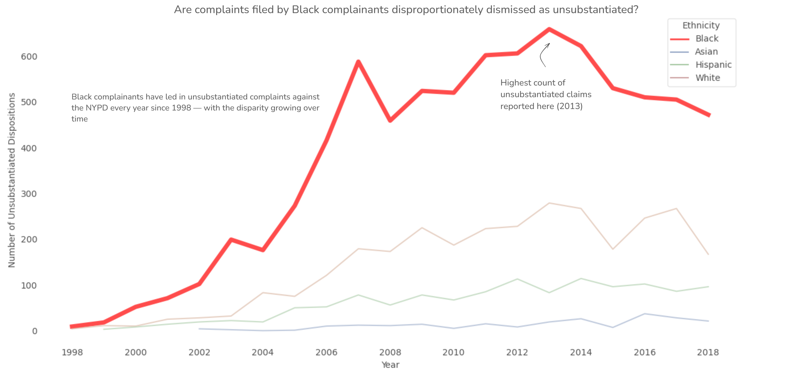
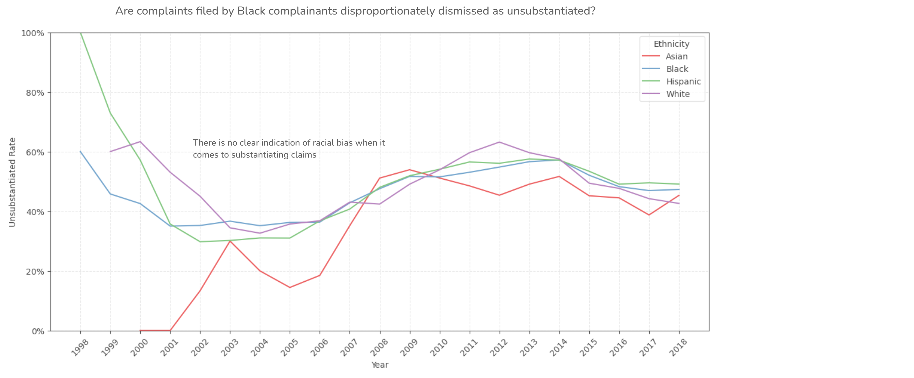

Proposition: Are complaints filed by Black complainants disproportionately dismissed as unsubstantiated?
FOR the Proposition

Design Decisions and Rationale:
| Design Choice | Deception Score | Rationale |
|---|---|---|
| Use of raw counts instead of proportions/percentages | -2.0 | Hides the fact that Black complainants make up a majority of the data provided. This would naturally lead to more unsubstantiated complaints, as well as substantiated ones. This is the primary decision in this graph that makes it deceptive, the rest of the design choices only serve to complement this decision. |
| Thick red line with rest of lines muted | -1.0 | This choice draws attention to the "focus" of the visualization, without necessarily labeling it as such. Moderately deceptive since the reader is instantly drawn to what the graphmakers (me) want them to focus on without providing a reason yet. Red chosen because it indicates urgency and danger, or that something is out of the ordinary-even if the data itself isn't actually extraordinary. Dilution is applied twice - first with Seaborns muted color palette and second with a manual adjustment of brightness. |
| Lack of tick marks / gridlines | -0.5 | Reduces the readers ability to accurately gauge the severity of the problem described. Decided to do this mostly to clean up the graph but could be mild to moderately deceptive. |
| Label of peak at 2013 | -0.5 | Mildy deceptive since it distracts from the main problem of the graph(that raw counts are used instead of proportions) in an attempt to steal a breath of legitimacy. Could be interpreted as earnest if done in good faith. |
AGAINST the Proposition

Design Decisions and Rationale:
| Design Choice | Deception Score | Rationale |
|---|---|---|
| Normalization by total count and conversion to percentages | 2.0 | Very earnest - accurately reflects disproportionality claims by controlling for complaint volume. Conversion to percentages since the general population is more familiar with percentages than proportions. |
| Consistent color palette with equal brightness | 1.0 | This choice allows each line to receive equal visual attention, letting the data speak for itself. Uses seaborn's color palette. |
| Gridlines clearly shown with every year marked | 1.0 | Increases overall visual clarity and allows the viewer to accurately see slope and prevents exaggeration. Used Matplotlib's ticker. |
| Use of a rolling average | -0.5 | Somewhat deceptive since it distorts the actual data slightly, but it's done in the name of visual clarity. Rolling average uses window size of 3, or the current year and past two years for smoothness. |
Final Reflection
My initial idea for my prompt was whether Black complainants filed a disproportionate amount of unsubstantiated claims, with my deceptive visualization claiming that they did so. However, I ended up feeling that neither political party would really ask such a pointed and charged question. I reframed the question—yet used the same data and graphs—to instead critique the NYPD’s judicial process of substantiating claims, which I felt was a much more relevant political dialogue.
This was a very fun project for me. Surprisingly, I found the deceptive visualization much more fun and challenging than the earnest one. I felt like I had to put much more effort into that one to get my point across, since I was clearly doing it in bad faith. I had some trouble thinking of what I could do to make my earnest visualization stand out—I ended up clearly indicating every year using Matplotlib’s ticker and implementing a rolling average, since the lines were going a little crazy on my initial implementation of that graph.
I used pandas, matplotlib, and seaborn for most of the visualization. I used Excalidraw to finish off the graph with captions within the graph, since I found it was pretty hard to do that cleanly in Python. I dropped all rows except 'year_received', 'complainant_ethnicity', and 'board_disposition', and filtered out the races that received very little responses as well as "Unknown", "Other Race", and "Refused". I also took out 2019 and 2020 from the data, since there were very few rows logged in these years.
I then applied a groupby function with year and race and aggregated based on the sum of the unsubstantiated results, and pivoted the table. For the deceptive visualization, I desaturated the base colors and adjusted transparency to be very low except for the line representing Black complainants, which I made bright red and set to width 5. I adjusted the legend back to the normal colors and line width to avoid drawing attention to this deception. I then removed the spines, gridlines, and axis lines to both clean up the graph and make it harder to gauge the true distance between the data.
For my faithful visualization, I applied much of the same initial process, but instead used proportional data by dividing the number of unsubstantiated complaints by the total number of complaints. I then used ticker formatting to make every year visible, and applied a rolling average when the lines got too messy.